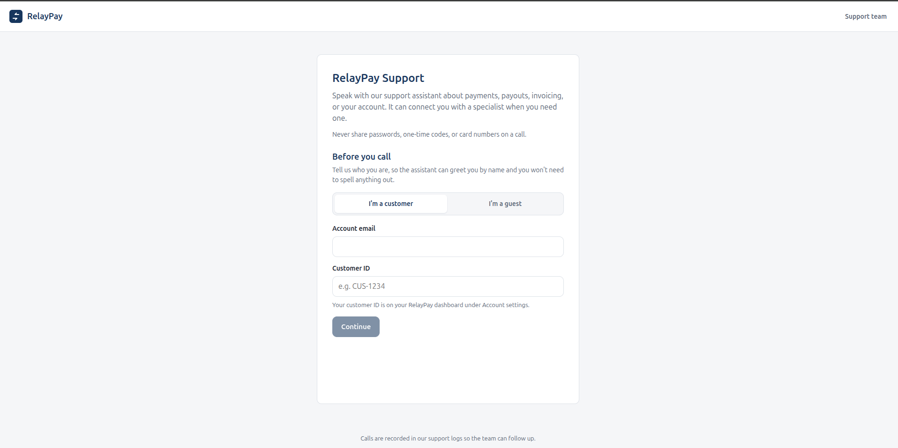
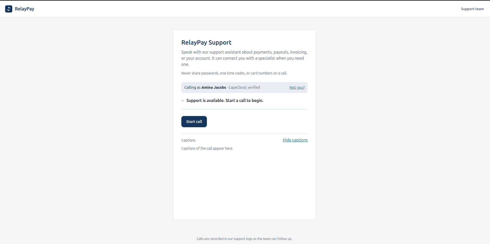
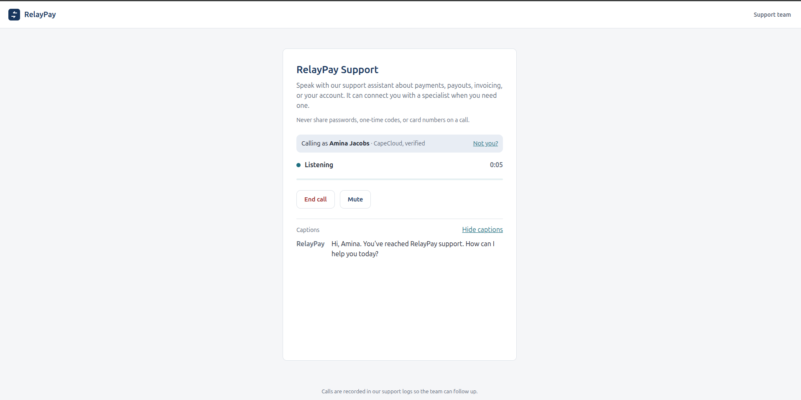
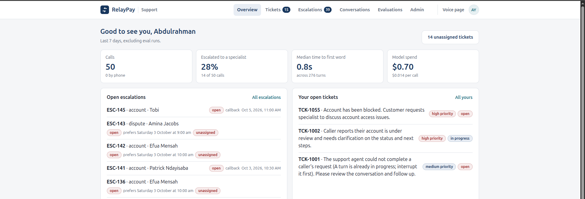

system flow
How a Call Becomes an Answer, a Ticket or a Specialist
![System flow diagram. The caller signs in and speaks; Vapi turns speech to text and sends each utterance to the backend; one Claude Agent SDK session per call decides to answer, clarify, escalate or decline; the MCP server's eight tools search the knowledge base, look up records, create tickets and escalations, and book callbacks; Supabase stores everything. Below: rules enforced in code, the support team's review console, callbacks booked on Google Calendar, and admins updating the knowledge base.](img/relaypay-support/system-flow.png)
Click the diagram to enlarge it.
// project · voice ai customer support
A caller signs in, then talks to an AI agent in the browser. It greets them by name, answers from RelayPay's approved knowledge, checks their account, transaction or payout, opens a ticket, or books a callback with a specialist on that person's Google Calendar. When approved knowledge doesn't cover a question, it declines instead of guessing. Every step is logged in Supabase.
overview
RelayPay customers (founders and finance teams at African startups and SMEs) who need support, and the RelayPay support team that picks up whatever the AI hands over.
Support is flooded with repetitive questions about fees, payout timelines, invoicing and verification. These arrive mixed in with account-specific issues, compliance holds, disputes and frustrated customers who need a person. Answering the first kind by hand is slow, and mishandling the second kind is risky.
Customers sign in with their account email and customer ID, and guests give a name, email and company. The agent then answers from approved knowledge, asks one clarifying question when a request is vague, checks records once the caller is verified, or hands the case to a specialist with a booked callback.
how it works
step 1
Voice
Vapi
Vapi turns speech into text and text into speech, and runs no model of its own. Each utterance goes to the backend as a Custom LLM request. The reply streams back a sentence at a time, so the caller hears "let me check that" while a lookup runs.
step 2
Decide
Claude Agent SDK · Claude Haiku 4.5
Each call gets one Agent SDK session, which applies six skills with 43 numbered rules. support-routing sets precedence and privacy-and-safety overrides everything. Each reply ends with a hidden tag recording its path (answer, clarify, escalate or decline) and its confidence.
step 3
Act through MCP
Custom MCP server · 8 tools
The eight tools are the agent's only reach. Lookups return a customer-safe summary and routing hints, never contact details, and each call is held to one account, verified or not. Tickets and escalations are deduplicated, and every escalation sits on a ticket. book_callback books the first support agent, in the admin's order, who is working and free on Google Calendar. The caller gets a calendar invite with a Meet link, and two callers can never get the same slot.
step 4
Record
Supabase
Supabase stores the conversation, each turn (with its path, confidence, latency and cost), the knowledge used, every tool call (including failures and refusals), tickets, escalations, events and evaluation results.
step 5
Hand over
/review support console
Support agents and admins are emailed when a case needs them. They work escalations and tickets in the console: take a case, see the booked callback, and close it with a resolution. Each change is confirmed first and audited. Admins set the callback order and update the knowledge base from the Admin page.
screens




using it
Call · customer
Open the voice page and say who you are: your account email and customer ID, or continue as a guest with your name, email and company. Press Start call, confirm, and allow the microphone.
Have a reference ready for status checks (for example TXN-9001). Ask for a callback and pick a time, and you'll get a calendar invite with a link to join.
Work the queue · support agent
Accept the emailed invite (it works for 3 days), then connect your Google Calendar on your Profile page so callers can book callbacks with you.
Overview shows open escalations and your tickets. Open a ticket to see the call, the caller's details and the activity. Assign it to yourself, add notes, set the confirmed callback time, and close it with a resolution note.
Run the team · admin
Invite agents or admins, change roles, and check that the MCP server, Vapi and keys are configured. Set the callback order and each person's working days, hours and time zone.
Run npm run eval to replay the 18 test scenarios. Edit the knowledge base from the Admin page: Check changes tests an edit against 39 questions without changing anything, and Publish makes it live with no redeploy.
stack